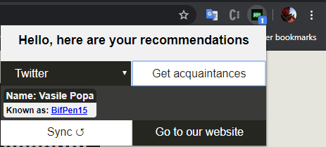

SON
- Putanu Alexandru
- Tugui Stefan-Cristian
Abstract
This page contains the following: Application architecture, Development stages and Task management
Used APIs
-
Express
Fast, unopinionated, minimalist web framework for Node.js
Express was used in our project a lot. We used Express to
- handle the GET and POST requests;
- together with the template engine to render pages client-side;
- to handle server-side processing calls made by some client interaction;
- redirect the anonymous users to the signup page;
- consume the POST/GET APIs from other sites;
-
Express-session
By creating a server session for each client,we were able to keep track of the logged-in users and their specific data, when requested. When an anonymous user is trying to access the site, the page will not be rendered,thanks to express-basic-auth and express-session.
-
LastFMAPI
To get authetication tokens and user data, our requests were processed with the help of Last FM API. The call we used from this api was user.getFriends , which requires as parameters the username and the api_key, which we got by creating a developer account. The API would return an JSON file containing a detailed list of friends, containing information like the realname, an url to the account, images with different sizes, number of subscribers and many others.
This is the lastfm api site /This is the node.js package -
Twitter
Twitter was a little bit more complicated Social Network that we used, because it requires a lot of steps to get an user authenticated. Here are some diagrams of the calls we used:
This is the twitter api site /This is the node.js package
First server request 
Redirecting the user 
Converting the request token to an access token The enpoint we used was GET friends/list which would retrieve by an user id a list of user-objects which we needed for all of his friends ( in this case people he follows ), together with a cursor for large accounts. -
vk-io
Even though the APIs for VKontakte we found were pretty old, this one managed to do the job for us, by making a call to vk.api.friends.get . The call requested the fields that we requested ( the country, the nickname, the name and surname, plus a photo to be shown on our site ), the id of the user whose friends we were going to receive and the token from our registered application.
This is the node.js pacakge /This is the VK api site
EJS
EJS stands for Embedded JavaScript templating. We used EJS as a template engine. Our work involved developing the fragments of the pages, for example the header and the nav, which are the same for all our pages and let the EJS create automatically a new html page with our desired content.
Application architecture
Goals
Our web solution provides a platform for social networking, this means that our users will be able to see all of their friends/contacts/followers from different social networks on our site. The users' profiles can be searched by name, and sorted by geographical areas, the network they come from.
Database

We keep our user records inside a JSON file, having the following fields:email,forename,last name,phone number; pass is the password we require for our site, this can be established only at the sign in phase; acquaintances is the field to be filled with the user's possible friends. Suppose user A has an account on Twitter, where he follows user B, and an account on lastfm, where he doesn't follow user B. If user B has an account on lastfm too, then he will appear in this field of user A as a possible acquaintance; friends field is to be filled with detailed userdata for each friend of our user, on each network next we have the usernames we use to identify the owner of the account, the vars that tell us wether the current user is signed in on one of the apps or not and the date that the user signed in.
Diagram
Our app is a single page type. We say this because, outside of the signup and login page, all the content is dinamically uploaded into the page with the help of Ajax and JQuery. Through POST requests, the body of the application is taken and inserted into the DOM of the current page, based on the user's interaction with the nav bar.
JavaScript Details
To begin with, our package includes 'main.js', a module filled with tools used by the server to manipulate/extract data from the database, such as:
- adduser(fname,lname,email,phone,psw), which checks if the email already exists into the database and if it does not, then it creates an user in the database with that email.
- putuser(network,email,name), which adds the username from the social network to the database
- getter for friends list,based on the network and email;
- setters for acquaintances and friends, based on lists of users returned from the APIs;
- checkUser(email,pass), which return true if such a combination exists in the database
Application Scenarios

The interaction of a new user with our application will have a flow just like this: The user will be prompted with the signup page. The user will create a new account, remember the password and login. After this, he may go to the links page and give our app permission to access his data. After logging in and giving us the right permissions, he may go to the friends tab and observe his whole network of friends/followers/contacts from the sites he signed up on. He may search a user from our database by name, sort the users by location, or by the site they know each other from. After this, he may look at the acquaintances tab and see the 'loose points' in his whole network. From there he cand look at the profiles of his friends from other networks and follow the link to their account, where they can add them as friends. For the user to refresh the friends list, he can simply log out and back in to the app. After this a new token will be generated and the friends list will be imported again.
Browser extension
One of our application's features includes a browser extension for Google Chrome:
- chrome.storage to store data client-side related to the possible contacts.
- chrome.tabs to access the client's current tab and to fetch data to make sure the client is logged in to our app.
The manifest of the extension shows the scripts used and the permissions it requires:
The extension provides the client with a bunch of popups to remind him of the possible contacts, for example, when entering the www.twitter.com site, the manifest of our extension will know the link the client just accessed should enable a script, so it will display such a message:

Development stages
We went through the following stages:
- Establishing the overall look of the site along with the database, functionalities and task management;
- Checking the internet extensively to see which social networks support our app, checking how the functionalities may be implemented knowing this information;
- Prototyping the main page and the templates;
- Look through the possible node packages we could use and test them
- Going through turning our static multi-page app to SPA
- Start designing server endpoints
- Defining and testing a way to standardize the data in our database, so we can define social network-independent ways of displaying it.
- Integration of all components